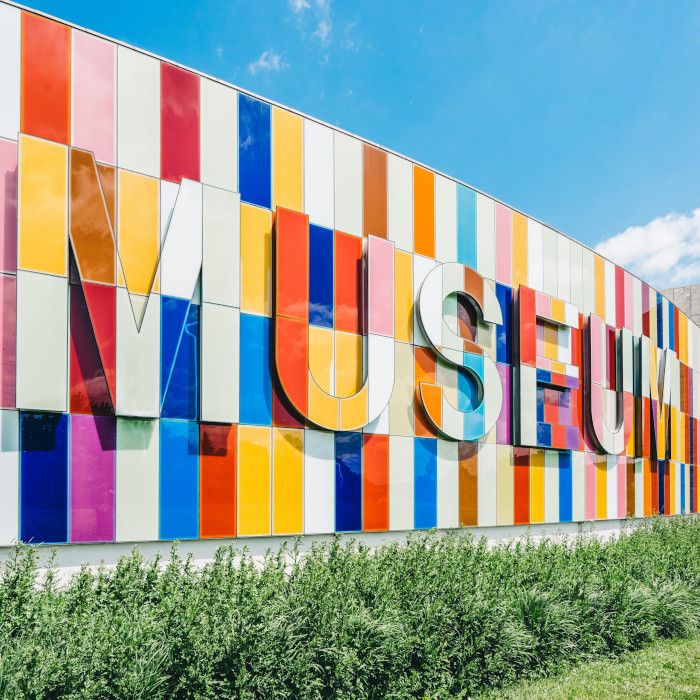
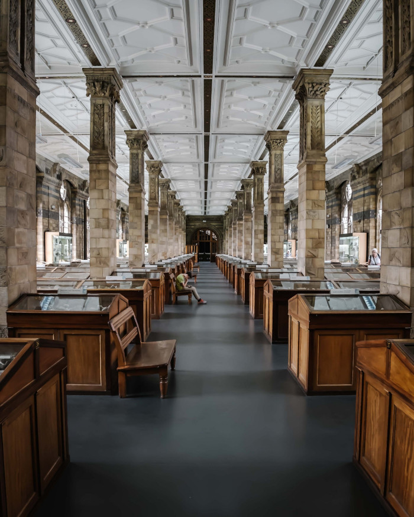

22 Baker Street
NW1 6XE London
United Kingdom

Accessibility
The museum has wheelchair accessibility ramps. It also has audio guides and braille display signs for the visually impaired.
Food and Drink
There is a café attached to the museum where you can get light lunches, soft drinks, coffee, snacks and more.
Shop
Our shop offers a range of memorabilia from the museum as well as great gifts and activity packs that allow you to continue to explore science even after you’ve left the museum.
Hours
Monday: Closed
Tuesday: 10:00 – 16:00
Wednesday: 10:00 – 16:00
Thursday: 10:00 – 16:00
Friday: 10:00 – 19:00
Saturday: 9:00 – 16:00
Sunday: 9:00 – 13:00
Admission
The entrance is free for all.
There are guided tours of the museum that leave every hour. These tours are 70 NOK per person and include a handy printed guide of the museum.
If you would like to organise a guided tour for your group of 6 or more people, please contact us to arrange the tour.
Contact Form
Get in touch!
Use the contact form to get in touch with the museum. State the reason for contact and leave us a message. Our team will get back to you by e-mail. If you want to book a guided tour of the museum, let us know when and how many people you are.
If you want to get involved and help out at the museum, please tell us a bit about yourself and what you would like to help with. If you would prefer to speak with us in person, you could visit the reception at the museum — see address and opening hours here — or call. Our phone line is open during the same hours as the museum.